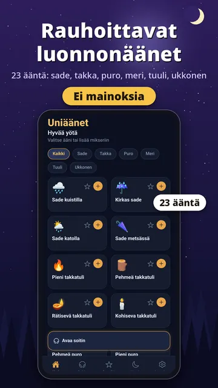

Naapurin melu yöllä – luonnon äänet avuksi
Naapuria ei voi laittaa pois päältä. Tasainen taustaääni voi kuitenkin saada puheen, television tai ohiajavan liikenteen erottumaan hieman vähemmän, jotta hiljainen huone ei säiky joka kerta, kun seinän takana tapahtuu jotain.
Kyse on melun peittämisestä, ei vastamelusta eikä äänieristyksestä. Se ei pysäytä bassokaiutinta seinän takaa, eikä se korvaa naapurille puhumista tai yhteydenottoa isännöitsijään. Tavalliseen, keskitason meteliin – puheeseen, televisioon, kadun ääniin – moni kokee jatkuvan luonnon äänen miellyttävämmäksi kuin täyden hiljaisuuden. Pidempi käytännön opas, jossa ovat mukana myös korvatulpat, huoneen järjestely ja naapurille puhuminen, on näin nukut meluisassa kerrostalossa.


Mikä yleensä auttaa, ja mikä ei
Äkillinen ääni erottuu helpommin täysin hiljaista huonetta vasten kuin pehmeää, tasaista taustaa vasten. Reilu, tasainen sade peittää melko laajan äänialueen, eikä siinä ole paljon aukkoja. Puro, tuuli tai meren aallot voivat tehdä saman, jos pidät niistä enemmän. Moni vertaa tätä valkoiseen kohinaan; luonnon äänet eivät ole sama asia, mutta ne voivat peittää taustaääniä pehmeämmin.
Kuulokkeet tai pieni kaiutin lähellä sänkyä toimivat yleensä paremmin kuin puhelin huoneen toisessa päässä, koska peittävä ääni on lähempänä korvaa kuin häiriö, jota yrität peittää. Pidä voimakkuus vain hieman häiriötä korkeampana. Täysille vääntäminen väsyttää, eikä se korjaa syvää bassojytinää.
Jos häiriö on kuorsaava puoliso eikä naapuri, katso äänet kuorsauksen peittämiseen. Ajatus on sama, ja rajat ovat samankaltaiset.
Sovellus, jonka voi jättää päälle yöksi
Uniäänet – Levollinen yö on Android-sovellus, jossa on 23 luonnon ääntä kuudessa ryhmässä: sade, takkatuli, puro, meri, tuuli ja ukkonen. Voit kuunnella yhtä ääntä tai sekoittaa enintään viisi ja säätää kunkin voimakkuuden. Suosikit muistavat sekoituksen. Äänet ovat valmiina sovelluksessa, joten ne toimivat ilman nettiä – hyödyksi, jos et halua suoratoistaa videota koko yötä.
Toisto jatkuu näytön lukittuessa, ja toistoa ja taukoa voi käyttää lukitusnäytöltä. Enintään 12 tunnin uniajastin päättyy hillittyyn himmennykseen, jonka keston valitset itse. Mainoksia ei ole, joten mikään sovelluksessa ei saisi keskeyttää ääntä kello kolmelta.
Jos sade on tavallinen peittoäänesi, oppaassa sadeäänet nukkumiseen ilman nettiä kerrotaan myös sateesta, joka soi ilman wifiä.
Rauhallinen tausta, ei hoito
Uniäänet ei ole lääkinnällinen sovellus, eikä se hoida unihäiriöitä. Se on rauhallinen tausta arkeen ja yöhön. Joillakin öillä naapuri kuuluu silti läpi; peittäminen on vain osittainen apu.
Kokeile sovellusta
Uniäänet tehtiin alun perin omaan käyttöön, koska tekijä on herkkä äänille yöllä. 7 päivän kokeilu alkaa ensimmäisestä käynnistyksestä. Kaikki ominaisuudet ovat käytössä, maksutietoja ei kysytä, eikä kokeilu muutu itsestään maksulliseksi tilaukseksi. Sen päätyttyä voit jatkaa kuukausitilauksella Google Playssa, hintaan joka näkyy ennen tilaamista. Seurantaa ja käyttäjätiliä ei ole. Tehty Suomessa.
7 päivää ilmaiseksi, sen jälkeen kuukausitilaus. Uniäänet – Levollinen yö, Androidille.